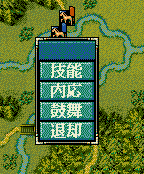
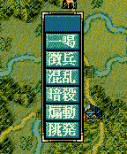

void カスタム::On_基本コマンド表示直前《戦争画面》(int 武将番号) {
}
 
void カスタム::On_基本コマンド表示直前《戦争画面》(int 武将番号) {
int iBushouID = 武将番号-1; // 武将番号→武将番号【配列用】に
if ( 0 <= iBushouID && iBushouID < 最大数::武将情報::配列数 ) {
if ( p武将戸籍情報[iBushouID].顔番号 == 顔番号::武田晴信 ) { // 武田信玄の顔＆列伝番号
Set_コマンド名(戦争画面::基本コマンド名::鼓舞, "虎の怒号");
}
else if ( p武将戸籍情報[iBushouID].顔番号 == 顔番号::長尾景虎 ) { // 上杉謙信の顔＆列伝番号
Set_コマンド名(戦争画面::基本コマンド名::鼓舞, "龍の咆哮");
}
}
}
void カスタム::On_基本コマンド表示直前《戦争画面》(int 武将番号) {
/*
* もしも上杉謙信と武田信玄が、接しているならば、
* 互いに一喝の命令が変化する。
*/
int iBushouID = 武将番号-1; // 武将番号→武将番号【配列用】に
if ( 0 <= iBushouID && iBushouID < 最大数::武将情報::配列数 ) {
番号リスト型 list = Get_出陣中の武将番号リスト【配列用】《表示中マップ》(); // 出陣中の
int BothOfExist = 0;
ヘックス位置型 Kn, Sn; // 謙信、信玄の位置
for each ( int iBushouID in list ) {
if ( p武将戸籍情報[iBushouID].顔番号 == 顔番号::武田晴信 ) { // 信玄が出陣している。
BothOfExist++;
// どのヘックスに居るのか覚えておく
if ( Is_野戦中() ) {
Sn = Get_武将の野戦ヘックス位置(iBushouID);
} else if ( Is_攻城戦中() ) {
Sn = Get_武将の攻城戦ヘックス位置(iBushouID);
}
}
else if ( p武将戸籍情報[iBushouID].顔番号 == 顔番号::長尾景虎 ) { // 謙信が出陣している。
BothOfExist++;
// どのヘックスに居るのか覚えておく
if ( Is_野戦中() ) {
Kn = Get_武将の野戦ヘックス位置(iBushouID);
} else if ( Is_攻城戦中() ) {
Kn = Get_武将の攻城戦ヘックス位置(iBushouID);
}
}
}
// 2人とも存在し、その距離はヘックス升で１つ。即ち隣接している。
if ( BothOfExist == 2 && Get_ヘックス間隔(Kn, Sn)==1 ) {
// 信玄なら
if ( p武将戸籍情報[iBushouID].顔番号 == 顔番号::武田晴信 ) {
Set_コマンド名(戦争画面::基本コマンド名::一喝, "龍撃虎");
Set_コマンド名(戦争画面::基本コマンド名::一喝, "龍撃虎");
// 謙信なら
} else if ( p武将戸籍情報[iBushouID].顔番号 == 顔番号::長尾景虎 ) {
Set_コマンド名(戦争画面::基本コマンド名::一喝, "虎破龍");
Set_コマンド名(戦争画面::基本コマンド名::一喝, "虎破龍");
}
}
}
}